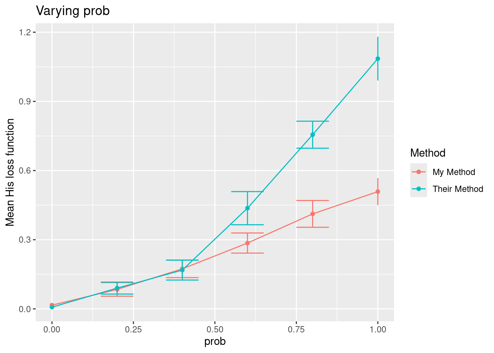

## Set up parameters
ns <- c(100L, 150L, 200L)
mean_diffs <- c(10, 20, 30)
sds <- c(50, 100)
reps <- 10L
## Bring together into data frame
results_template <- expand.grid(
n = ns,
mean_diff = mean_diffs,
sd = sds,
p.value = NA_real_
)
base_r_sim <- results_template[rep(1:nrow(results_template), each = reps), ]
## Loop over rows of the data frame and calculate the p-value
for (i in 1:nrow(results_template)) {
params <- base_r_sim[i,]
pre <- rnorm(params$n, 0, params$sd)
post <- pre + rnorm(params$n, params$mean_diff, params$sd)
base_r_sim$p.value[i] <- t.test(pre, post)$p.value
}
## Display table output
DT::datatable(base_r_sim)Setting up simulations in R
List of packages for data simulation
How to choose ?
- Number of dependencies
- Number of reverse dependencies
- Date of latest commit
- Date of last release
- Is it on CRAN or only on Github?
- Who developed it?
- Philosophy
| Version | Number of dependencies | Number of reverse dependencies | Date of latest commit | Date of latest release | Documentation quality | On CRAN? | Developers | |
|---|---|---|---|---|---|---|---|---|
| DeclareDesign | 1.0.10 | 2 | 1 | 2024-04-13 | 2024-04-21 | Yes | Graeme Blair | |
| MonteCarlo | 1.0.6 | 6 | 0 | 2019-01-31 | 2019-01-31 | Yes | Christian Hendrik Leschinski | |
| simChef | 0.1.0 | 22 | 0 | 2024-03-20 | NA | No | Tiffany Tang, James Duncan | |
| simEngine | 1.4.0 | 6 | 0 | 2024-04-13 | 2024-04-04 | Yes | Avi Kenny, Charles Wolock | |
| simpr | 0.2.6 | 11 | 0 | 2024-07-16 | 2023-04-26 | Yes | Ethan Brown | |
| simulator | 0.2.5 | 1 | 0 | 2023-02-02 | 2023-02-04 | Yes | Jacob Bien |
simpr
Problem
- Study: Pre-post comparison of the “Triglicious” intervention;
- Research question: Did Triglicious improve students’ math scores?
- Method: Paired t-test
Usual base R solution
What simpr author advocates is bad:
- Most important pieces (data generating process, model specification, definitions, varying parameters) are hidden;
- What if there is an error?
- What about parallelization?
- Is this code sufficiently readable? Without the comments?
Solution via simpr
## Specify pre and post scores that differ by a given amount
specify(
pre = ~ rnorm(n, 0, sd),
post = ~ pre + rnorm(n, mean_diff, sd)) |>
## Define parameters that can be varied
define(n = 100, mean_diff = 10, sd = 50) |>
## Generate datasets
generate(100) |>
## Fit datasets
fit(t = ~t.test(post, pre, paired = TRUE)) |>
## Collect results
tidy_fits() |>
DT::datatable()A complete solution with varying parameters
sim_vary <- specify(
pre = ~ rnorm(n, 0, sd),
post = ~ pre + rnorm(n, mean_diff, sd)
) |>
define(
n = c(100, 150, 200),
mean_diff = c(10, 20, 30),
sd = c(50, 100)
) |>
generate(100, .progress = TRUE) |>
fit(t = ~t.test(post, pre, paired = TRUE)) |>
tidy_fits()
sim_vary |>
dplyr::group_by(n, mean_diff, sd) |>
dplyr::summarize(Power = mean(p.value < 0.05)) |>
ggplot(aes(n, Power)) +
geom_col() +
facet_grid(rows = vars(sd), cols = vars(mean_diff)) +
theme_bw()`summarise()` has grouped output by 'n', 'mean_diff'. You can override using
the `.groups` argument.
Philosophy
The simpr workflow, inspired by the infer package, distills a simulation study into five primary steps:
specify()your data-generating process;define()parameters that you want to systematically vary across your simulation design (e.g. n, effect size);generate()the simulation data;fit()models to your data (e.g.lm());tidy_fits()for consolidating results usingbroom::tidy(), such as computing power or Type I Error rates.
Reproducible workflows
- Same seed, same results;
- Can regenerate just a specific subset to see what happened in that particular dataset or fit;
- Useful in debugging and diagnosing unexpected results, etc.
Filtering full simulation
set.seed(500)
specify(a = ~ runif(6)) |>
generate(3) |>
dplyr::filter(.sim_id == 3)full tibble
--------------------------
# A tibble: 1 × 3
.sim_id rep sim
<int> <int> <list>
1 3 3 <tibble [6 × 1]>
sim[[1]]
--------------------------
# A tibble: 6 × 1
a
<dbl>
1 0.371
2 0.959
3 0.633
4 0.177
5 0.803
6 0.133Simulate subset only
set.seed(500)
specify(a = ~ runif(6)) |>
generate(3, .sim_id == 3)full tibble
--------------------------
# A tibble: 1 × 3
.sim_id rep sim
<int> <int> <list>
1 3 3 <tibble [6 × 1]>
sim[[1]]
--------------------------
# A tibble: 6 × 1
a
<dbl>
1 0.371
2 0.959
3 0.633
4 0.177
5 0.803
6 0.133Benchmarking
set.seed(500)
bench::mark(
all = specify(a = ~ runif(6)) |>
generate(1000) |>
dplyr::filter(.sim_id == 1000),
subset = specify(a = ~ runif(6)) |>
generate(1000, .sim_id == 1000),
check = FALSE, min_iterations = 10L, relative = TRUE
)Warning: Some expressions had a GC in every iteration; so filtering is
disabled.# A tibble: 2 × 6
expression min median `itr/sec` mem_alloc `gc/sec`
<bch:expr> <dbl> <dbl> <dbl> <dbl> <dbl>
1 all 66.8 61.7 1 1 1
2 subset 1 1 62.9 1.29 1.49Other features
Data munging
Add per_sim() |> after generate() in your simulation pipeline and then any tidyverse function that will apply to every simulation dataset:
specify(
pre = ~ rnorm(n, 0, sd),
post = ~ pre + rnorm(n, mean_diff, sd)
) |>
define(
n = c(100, 150, 200),
mean_diff = c(10, 20, 30),
sd = c(50, 100)
) |>
generate(1000, .progress = TRUE) |>
## Apply tidyverse functions to every simulation dataset
per_sim() |>
## Mutate to add a range restriction
dplyr::mutate(dplyr::across(dplyr::everything(), dplyr::case_when(
pre > 100 ~ 100,
pre < -100 ~ -100,
.default ~ pre
))) |>
fit(t = ~ t.test(post, pre, paired = TRUE)) |>
tidy_fits()
Error handling
- Can change error handling to keep going with simulation, stop simulation, or to skip warnings;
- Debug and recovery options to enter into simulation during error.
Built-in parallelization
Just add
library(future)
plan(multisession, workers = 6) # or however many cores are reasonable to useand your simulation pipeline (actually the generate() function) will run in parallel.
Pros & Cons
Simulator
This is a package on the CRAN. It is described in a 2016 paper by Jacob Bien. Last update on GitHub : last year (so, 2023).
Getting started
The function “create”, with a directory that does not exist, will create the directory with 5 files :
- eval_functions.R : contains metrics to be evaluated
- main.R : main code to run
- method_functions.R : methods to run
- model_functions.R : define the models.
- writeup.Rmd
library(simulator)
Attachement du package : 'simulator'L'objet suivant est masqué depuis 'package:simpr':
renamedir <- "./sims_simulator"
create(dir)New simulation template created! Go to ./sims_simulator/main.R to get started.setwd(dir)
list.files()[1] "eval_functions.R" "main.R" "method_functions.R"
[4] "model_functions.R" "writeup.Rmd" “On a typical project, one starts by defining a model in model_functions.R, one or two methods in method_functions.R, and a few metrics in eval_functions.R, and then one runs the code in main.R. After looking at some of the results, one might add an additional model or method or metric. One then returns to main.R, adds some additional lines specifying that the additional components should be run as well and looks at some more results.
The simplest way to look at results is by using the plot functions “plot_eval”, “plot_evals” and “plot_evals_by.” In situations where you wish to investigate results more deeply than just looking at aggregated plots, one can use the functions “model”, “draws”, “output”, and “evals” to get at all objects generated through the course of the simulation.”
The “create” function also create the template in the different files :
what is in model_functions
make_my_model <- function(n, prob) {
new_model(name = "contaminated-normal",
label = sprintf("Contaminated normal (n = %s, prob = %s)", n, prob),
params = list(n = n, mu = 2, prob = prob),
simulate = function(n, mu, prob, nsim) {
# this function must return a list of length nsim
contam <- runif(n * nsim) < prob
x <- matrix(rep(NA, n * nsim), n, nsim)
x[contam] <- rexp(sum(contam))
x[!contam] <- rnorm(sum(!contam))
x <- mu + x # true mean is mu
return(split(x, col(x))) # make each col its own list element
})
}Define a model from its different components with “new_model” :
- name
- label : what will be printed in the tables later probably ?
- param : a list of different parameters for the model
- simulate : a function of the parameters, that returns nsim simulations.
what is in method_functions
my_method <- new_method("my-method", "My Method",
method = function(model, draw) {
list(fit = median(draw))
})
their_method <- new_method("their-method", "Their Method",
method = function(model, draw) {
list(fit = mean(draw))
})Define methods to be used on the model. The function “new_method” has for arguments a name (for R), a pretty name, and the “method” named arg for the computation we want.
what is in eval_functions
his_loss <- new_metric("hisloss", "His loss function",
metric = function(model, out) {
return((model$mu - out$fit)^2)
})
her_loss <- new_metric("herloss", "Her loss function",
metric = function(model, out) {
return(abs(model$mu - out$fit))
})Metric objects : shows how to compare model object and output of the method (method used on sim) object.
what is in main
setwd(dir)
# This is the main simulator file
library(simulator) # this file was created under simulator version 0.2.5
source("model_functions.R")
source("method_functions.R")
source("eval_functions.R")
## @knitr init
name_of_simulation <- "normal-mean-estimation-with-contamination"
## @knitr main
sim <- new_simulation(name = name_of_simulation,
label = "Mean estimation under contaminated normal") %>%
generate_model(make_my_model, seed = 123,
n = 50,
prob = as.list(seq(0, 1, length = 6)),
vary_along = "prob") %>%
simulate_from_model(nsim = 10) %>%
run_method(list(my_method, their_method)) %>%
evaluate(list(his_loss, her_loss))..Created model and saved in contaminated-normal/n_50/prob_0/model.Rdata
..Created model and saved in contaminated-normal/n_50/prob_0.2/model.Rdata
..Created model and saved in contaminated-normal/n_50/prob_0.4/model.Rdata
..Created model and saved in contaminated-normal/n_50/prob_0.6/model.Rdata
..Created model and saved in contaminated-normal/n_50/prob_0.8/model.Rdata
..Created model and saved in contaminated-normal/n_50/prob_1/model.Rdata
..Simulated 10 draws in 0 sec and saved in contaminated-normal/n_50/prob_0/r1.Rdata
..Simulated 10 draws in 0 sec and saved in contaminated-normal/n_50/prob_0.2/r1.Rdata
..Simulated 10 draws in 0 sec and saved in contaminated-normal/n_50/prob_0.4/r1.Rdata
..Simulated 10 draws in 0 sec and saved in contaminated-normal/n_50/prob_0.6/r1.Rdata
..Simulated 10 draws in 0 sec and saved in contaminated-normal/n_50/prob_0.8/r1.Rdata
..Simulated 10 draws in 0 sec and saved in contaminated-normal/n_50/prob_1/r1.Rdata
..Performed My Method in 0 seconds (on average over 10 sims)
..Performed Their Method in 0 seconds (on average over 10 sims)
..Performed My Method in 0 seconds (on average over 10 sims)
..Performed Their Method in 0 seconds (on average over 10 sims)
..Performed My Method in 0 seconds (on average over 10 sims)
..Performed Their Method in 0 seconds (on average over 10 sims)
..Performed My Method in 0 seconds (on average over 10 sims)
..Performed Their Method in 0 seconds (on average over 10 sims)
..Performed My Method in 0 seconds (on average over 10 sims)
..Performed Their Method in 0 seconds (on average over 10 sims)
..Performed My Method in 0 seconds (on average over 10 sims)
..Performed Their Method in 0 seconds (on average over 10 sims)
..Evaluated My Method in terms of
His loss function, Her loss function, Computing time (sec)
..Evaluated Their Method in terms of
His loss function, Her loss function, Computing time (sec)
..Evaluated My Method in terms of
His loss function, Her loss function, Computing time (sec)
..Evaluated Their Method in terms of
His loss function, Her loss function, Computing time (sec)
..Evaluated My Method in terms of
His loss function, Her loss function, Computing time (sec)
..Evaluated Their Method in terms of
His loss function, Her loss function, Computing time (sec)
..Evaluated My Method in terms of
His loss function, Her loss function, Computing time (sec)
..Evaluated Their Method in terms of
His loss function, Her loss function, Computing time (sec)
..Evaluated My Method in terms of
His loss function, Her loss function, Computing time (sec)
..Evaluated Their Method in terms of
His loss function, Her loss function, Computing time (sec)
..Evaluated My Method in terms of
His loss function, Her loss function, Computing time (sec)
..Evaluated Their Method in terms of
His loss function, Her loss function, Computing time (sec)## @knitr plots
plot_eval_by(sim, "hisloss", varying = "prob")
## @knitr tables
tabulate_eval(sim, "herloss", output_type = "markdown",
format_args = list(digits = 1))<!-- generated by simulator on Tue Aug 20 11:45:52 2024. -->| My Method | Their Method | |
|---|---|---|
| Contaminated normal (n = 50, prob = 0) | 0.11 (0.02) | 0.07 (0.02) |
| Contaminated normal (n = 50, prob = 0.2) | 0.25 (0.05) | 0.25 (0.06) |
| Contaminated normal (n = 50, prob = 0.4) | 0.38 (0.06) | 0.37 (0.06) |
| Contaminated normal (n = 50, prob = 0.6) | 0.52 (0.04) | 0.63 (0.06) |
| Contaminated normal (n = 50, prob = 0.8) | 0.63 (0.04) | 0.86 (0.03) |
| Contaminated normal (n = 50, prob = 1) | 0.70 (0.05) | 1.03 (0.05) |
main calls the different files.
? Can plot_eval_by be used for different metrics at once ? ? Can tabulate_eval be used for different metrics at once ?
Important functions :
- new_model()
- new_method()
- new_metric()
- new_simulation
- generate_model
- simulate_from_model
- run_method
- evaluate
- plot_eval, plot_eval_by, tabulate_eval.
Final notes :
This is not really a package that codes a method, but instead it proposes an architecture to store your codes, output simulations, results, etc.
PROs :
any model possible, if you can write it !
possible to iterate over parameter with pretty pipes
parallel possible, because you choose what you use
stores all results in the storage with increasing depth:
files
name_of_model
name_of_first_param_value
name_of2nd_param_value … model.Rdata out : stores all sims
- r?.Rdata
CONs :
- Not an usual way to code in R, and not easy to explain. create the directory with the “create” function. Then, add the different functions, methods, models… in the corresponding files.
- Mixes the code of the package/template with your own code.
- stores all results in this neat way BUT if too many parameters, may exceed the depth allowed.